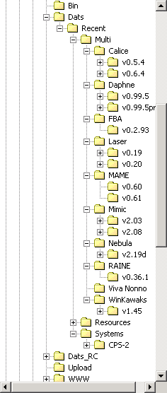

(posted on the list by Logiqx on Oct 1st)
I have just updated 3 more dats for logiqx.com (FBA, Daphne, RAINE) and made some improvements to 'Dats' and 'Dats_RC' at the same time.
1) I have created sub-directories for files that relate to a particular version of each emulator.
For example: mame.exe, fba.exe, Nebula drivers, etc.

Files within these directories are either used for automatic dat generation, to verify newly created dats or identify ROM changes in an emulator (all actions are scripted so that you can see what is possible). Old directories can be deleted when a new version of the emulator comes out.
2) All scripts have been renamed to have a '_' at the beginning of them (e.g. '_rebuild_all.bat').
With more dats being added to the environment it makes it easier to find the script when it is above all other files. ;)
3) The makefiles now hide the output of DatUtil and MAMEDiff.
Instead, they just output a simple message to say what is going on. Much easier on the eyes! :)
4) The makefiles in 'Dats_RC' are better written, using the 'subst' function to reduce the amount of times that each filename is included.
This will make 'copy and pasting' much simpler.
5) I have created a script called '_check_merging.bat' so that you can use it. This script uses DatUtil 'fix merging' (-m option) then compares the result with the original dat. If there is a difference then it is shown so that we can correct our master dat.
This highlighted problems a few minor problems that I have now corrected:
Finally, because of the changes you should delete your 'Dats' and 'Dats_RC' directories (back them up if you wish) and replace them with these:
They include the three new dats (so that you can see what I have done) and preliminary areas for Laser, Calice and Mimic. Currently these areas just contain comparison scripts so that we can see what is new in the emulators but they will be interesting for you to look at.
Got to go out now and won't have access to my e-mail until tomorrow. I am sure you will manage ok without me though. ;)
Mike (2002-DSC_0301c.jpg - taken a few weeks ago)
{kind=link}